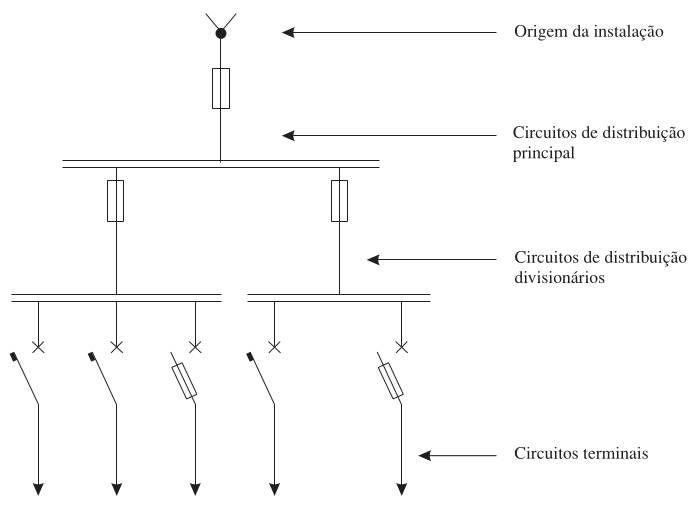
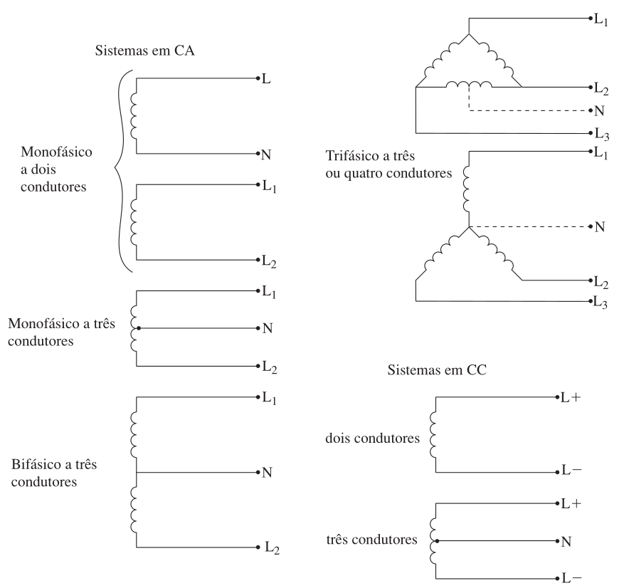

Instalações Elétricas - Ademaro A. M. B. Cotrim Capítulo 1 - Fundamentos
Prof. Dr. Thales A. C. Maia
UFMG - DEE
Conceitos Básicos
Circuito e Sistema Elétrico
Circuito elétrico: conjunto de corpos, componentes ou meios no qual é possível que haja corrente elétrica.
Sistema elétrico: circuito ou conjunto de circuitos inter-relacionados constituído para determinada finalidade, formado por componentes que conduzem corrente.
Instalação Elétrica
Inclui componentes que não conduzem corrente, mas são essenciais ao funcionamento (condutos, caixas, suportes).
É o sistema elétrico físico: conjunto coordenado composto para um fim específico.
A cada instalação elétrica corresponderá um sistema elétrico.
Norma NBR 5410
Instalações de Baixa Tensão
Aplica-se a instalações elétricas cuja tensão nominal é igual ou inferior a 1.000 V em CA ou 1.500 V em CC.
Fixa condições para garantir: funcionamento adequado, segurança de pessoas e animais, e conservação de bens.
Aplicações da NBR 5410
Edificações residenciais e comerciais em geral.
Estabelecimentos institucionais e de uso público.
Estabelecimentos industriais e agropecuários.
Instalações temporárias (canteiros de obras, feiras).
Componentes das Instalações
Equipamento e Dispositivo
Equipamento Elétrico: Unidade funcional que exerce funções de geração, transmissão, distribuição ou utilização de energia.
Dispositivo Elétrico: Equipamento integrante de um circuito com funções de Manobra, Comando, Proteção e Controle.
Esquemas Típicos de Instalações
Quadro Principal: Recebe energia da origem da instalação e a distribui para outros circuitos ou quadros.
Fig. 1: Esquemas típicos de instalações: (a) alimentação por rede pública BT; (b) alimentação por rede pública AT (Cotrim, 2009).
Distribuição Radial
Normalmente as instalações utilizam distribuições radiais, onde podemos distinguir:
Circuitos de distribuição: Principais ou divisionários, interligando os quadros.
Circuitos terminais: Protegidos pelo último dispositivo de proteção.

Fig. 2: Distribuição radial: circuitos de distribuição e terminais (Cotrim, 2009).
Esquemas de Condutores Vivos
De acordo com a NBR 5410, os sistemas de alimentação podem ser definidos pelos seus condutores vivos (fases e neutro). Os esquemas variam desde monofásicos a dois condutores até trifásicos com neutro.

Fig. 3: Esquemas de condutores vivos segundo a NBR 5410 (Cotrim, 2009).
Grandezas e Definições
Carga e Potência
Carga elétrica: equipamento que absorve potência ativa. Podem ser lineares ou não-lineares (eletrônicos que distorcem a onda).
Potência instalada: soma das potências nominais dos equipamentos de utilização de uma instalação.
Faltas e Correntes
Falta elétrica: contato acidental entre partes com potenciais diferentes (curto-circuito) ou para a terra.
Sobrecarga: corrente que excede o valor nominal sem que haja uma falta elétrica.
Corrente de fuga: corrente muito pequena que percorre um caminho diferente do previsto através da isolação.
Corrente Diferencial-Residual (\(i_{DR}\))
É a soma vetorial (ou dos valores instantâneos) das correntes que percorrem todos os condutores vivos do circuito considerado.